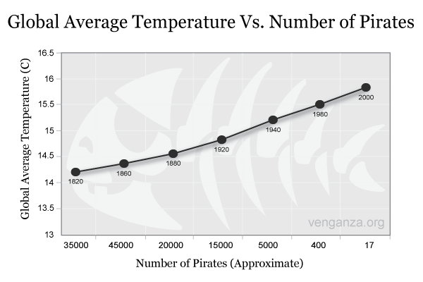

The Flying Spaghetti Monster mythology, also known as the
Pastafarianism religion, was created in January 2005 by the genius
physicist Bobby Henderson in an attempt to reveal the truth about the
world to as many people as he could. Bobby Henderson founded the
Church of the Flying Spaghetti Monster when he realized that major
religions didn't accept Pastafarianism. As the word about the amazing
flying spaghetti monster spread along the internet, more and more people
could join the faith and see the truth about our planet and history. As of
today, there are more than 15 million believers and the number just keeps
increasing every day that passes.
In the beginning, there existed only a divine being of absolute spaghetti,
but it grew weary and resolved to bring forth the greatest masterpiece of
all time, the universe. In 10,000 years, the entity created each and every
thing. With its meatball, it created the stars and with just a thought, it
created time itself and the fourth dimension. During the creation journey
of the entity, it accidentally closed one of its eyes. In this moment, when
the eye was closed, darkness was born. After the entity finished the universe,
it decided that it was too boring, so it decided to make the universe seem
as much older than it is (this is where fossils came from).
The entity created the universe but found it boring, so it began searching
for a new project. A flat minor planet was discovered by the entity, which
was unlike other planets. Sculptures were created on the planet and holy
spaghetti sauce(known today as our blood) was used to feed them. This
led to the emergence of the first people, known as the pirates.
The flying spaghetti monster is the creator of the universe and the most
powerful being to ever exist. Its holy spaghetti sauce is the origin of life
itself, as with that sauce the flying spaghetti monster created the first
humans. The spaghetti monster is not only all-powerful but also all-knowing,
but because it is drunk 99 percent of the time it doesn’t remember anything,
in fact, the flying spaghetti monster doesn’t even remember it is a god
or that it created the universe. “The flying spaghetti monster” isn’t actually the
real name of this powerful god, it is a name that was given it by the pirates
because if someone would say the real name out loud, he would just
disappear, and never be found again.
I willtell you the real name of the spaghetti monster but remember that I
warned you no matter what even if your life depends on it NEVER say this
name out loud or you will suffer fate worse than even death itself, the
name is “Bob”.
The pirates were not only the first humans but also the holy people of the
flying spaghetti monster. Because of the pirates' devotion to the spaghetti
monster they were blessed with unhuman strength, luck, and a body
bigger than Arnold
Schwarzenegger
.The holiest pirate all them all who
also was the one and the only prophet was the legendary pirate,
Blackbeard. It is said that Blackbeard was so devoted to god that not only
did he eat only spaghetti but also drank only spaghetti sauce full of
vodka. One day, Blackbeard had a dream, and in that dream, he saw
heaven itself, as he later described to his fellow pirates heaven was a big
land made out of spaghetti and full of volcanos of beer and vodka. But
heaven is not the only thing Blackbeard saw in this dream, he also saw

the god himself, the flying spaghetti monster. Blackbeard tried to talk with
the flying spaghetti monster but before he even said a word the monster
stopped him and said to him "You shall call me by my real name, as my
real name is Bob". Blackbeard and Bob spoke for years without even
stopping and during their conversion, Bob decided Blackbeard needed a
new name, a more holy name and so from this point on Blackbeard was
called Spaghettibeard. In fact, until today Spaghettibeard is the only
human who ever said the true name of the spaghetti monster and didn't
disappear There is another interesting piece of history, one that the
government and the people behind the scenes don't want you to know,
that is that the global warming is happing because the number of pirates
in the world decreases. Because you see, the job of the pirates is to keep
the world in place, and because there are fewer and fewer pirates every
day that passes, the number of natural disasters and wars keeps increasing.